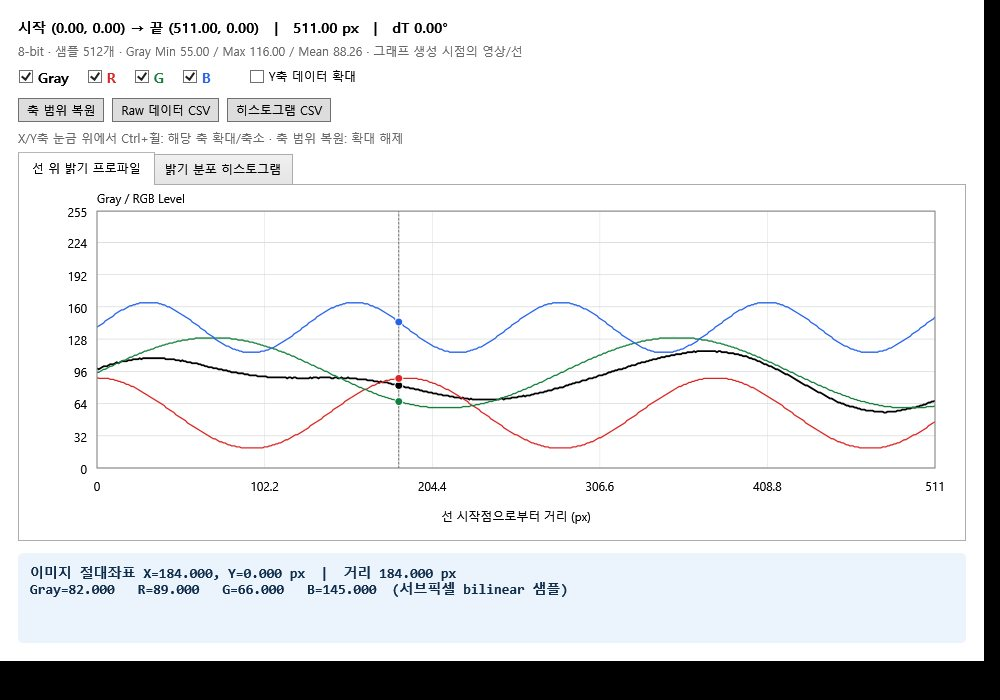
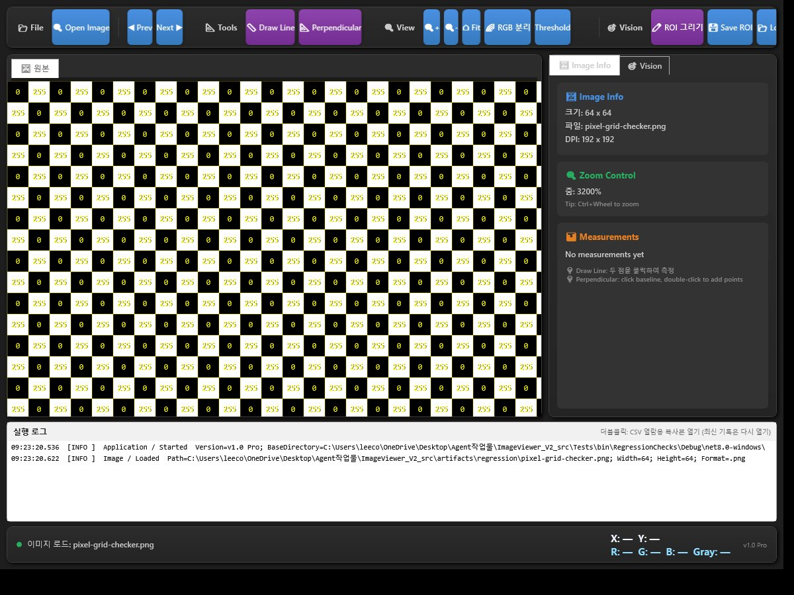

광학 검토보고서를 많이 쓰면서, 고객은 "영상이 잘 보인다"보다 "이 광학계로 이렇게 검사된다"를 보여 줄 때 수주 확률이 높다는 것을 알게 됐습니다. SW 팀에 검사 콘셉트를 매번 설명하는 대신 광학 엔지니어가 직접 검사 장면을 만들 수 있는 도구를 만들었습니다.
문제
- ImageJ로도 Threshold·Gray 그래프·측정은 되지만 화면이 보고서용으로 쓰기엔 전문성과 시인성이 부족
- 검사 콘셉트를 보여 주려면 SW 팀과 반복 소통 필요
내 역할
필요한 기능과 화면 동선 정의, 실제 영상으로 측정값·프로파일·이진화 결과 검증
AI 활용
코딩 에이전트로 구현. 프로파일·격자·회전 화면을 자동 캡처하는 회귀 시험으로 고칠 때마다 확인
결과
- 광학 검토보고서 제작에 실제 사용 중, 고객 반응 좋음
- 광학계 데모 구성 하루 만에 검사 콘셉트 결과까지 보고서로 전달
- 같은 양식의 보고서로 회사 안에서 통일

